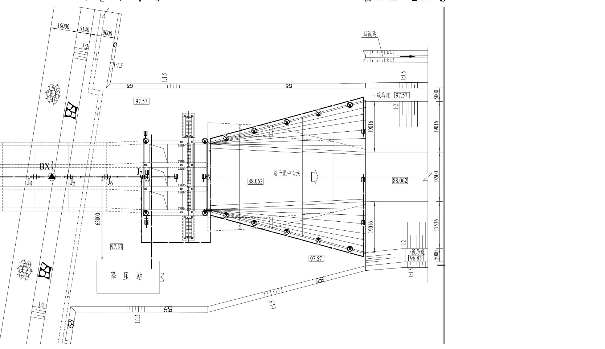

<!DOCTYPE html>
<html lang="en">
<head>
    <meta charset="UTF-8">
    <title>Title</title>
    <script src="/d3/d3-v5.9.7/d3.js" charset="utf-8"></script>
    <link rel="stylesheet" href="/wpcharts/dist/wpcharts.css" type="text/css"/>
    <script src="/wpcharts/dist/wpcharts-old.js?v=19"></script>
</head>
<body>
<!--

-->
<div id="root2-4"></div>
<div id="root2-3"></div>
<div id="root2-2"></div>
<div id="root4"></div>
<div id="root2-1"></div>
<div id="root3"></div>
<div id="root2"></div>
<div id="root1"></div>
<div id="root"></div>
<script>
    //style="display: none"
    //let ids = "AD0400BY3MX3022,AD0400BY3MX3021,AD0400BZ3MX3011,AD0400BZ3MX3012";
    //let ids = "AD0400BZ1PZ1003,AD0400BZ1PZ1002,AD0400BZ1PZ1001";
    let ids = "AD0400BY3MX3022";
    let ids0 = "AD0400BY3MX3021,AD0400BY3MX3022";
    let ids1 = "AD0400BY3MX3021";
    let ids2 = "AD0400BY3MX3022";
    let time = "";
    let startT = "2017-08-21";
    let endT = "2019-08-21";
    let phy_json = '{"COMP01":"频模(Hz²/1000)","COMP08":"温度(℃)","COMP09":"相对位移(mm)","COMP10":"绝对位移(mm)"}';
    let phy_json0 = '{"COMP01":"频模(Hz²/1000)"}';
    let phy_json1 = '{"COMP01":"频模(Hz²/1000)","COMP08":"温度(℃)"}';
    let phy_json2 = '{"COMP09":"相对位移(mm)","COMP10":"绝对位移(mm)"}';
    //let phy_json = '{"COMP01":"频模(Hz²/1000)","COMP08":"温度(℃)","COMP09":"渗压(kPa)"}';
    //let phy_json = '{"COMP01":"频模(Hz²/1000)"}';
    //let phy_json = '{"COMP08":"温度(℃)"}';
    //let phy_json = '{"COMP09":"渗压(kPa)"}';


    let requestData = {
        physical:phy_json0,
        ids:ids1,
        dateNum:time,
        starttime:startT,
        endtime:endT
    };
    let chart = wpcharts.init("#root");console.log("chart:", chart);
    chart.setOption({
        //url:"/business/basic/datamanage/processLine",
        url:"/wpcharts/data/sky2-data.json",
        request: {
            method: 'GET',
            //body: requestData
        },
        type: "chart"
    });

    let chart_distribution = wpcharts.init("#root2");console.log("chart_distribution:", chart_distribution);
    chart_distribution.setOption({
        url:"/wpcharts/data/distribution-1.json",
        request: {
            method: 'GET',
        },
        type: "distribution",
        isHorizontal: true,//水平图
    });

    let chart_correlation = wpcharts.init("#root3");console.log("chart_correlation:", chart_correlation);
    chart_correlation.setOption({
        url:"/wpcharts/data/correlation.json?v=4",
        request: {
            method: 'GET',
        },
        type: "correlation"
    });

    let chart_distribution_1 = wpcharts.init("#root2-1");console.log("chart_distribution_1:", chart_distribution_1);
    chart_distribution_1.setOption({
        url:"/wpcharts/data/distribution-1.json",
        request: {
            method: 'GET',
        },
        type: "distribution",
        isHorizontal: false,//垂直图
    });

    let chart_statistical = wpcharts.init("#root4");console.log("chart_statistical:", chart_statistical);
    chart_statistical.setOption({
        url:"/wpcharts/data/statistical.json?v=1",
        request: {
            method: 'GET',
        },
        type: "statistical"
    });

    let chart_distribution_2 = wpcharts.init("#root2-2");console.log("chart_distribution_2:", chart_distribution_2);
    chart_distribution_2.setOption({
        url:"/wpcharts/data/distribution-clinometer.json",
        request: {
            method: 'GET',
        },
        type: "distribution",
        isHorizontal: false,//垂直图
    });

    let chart_distribution_3 = wpcharts.init("#root2-3");console.log("chart_distribution_3:", chart_distribution_3);
    chart_distribution_3.setOption({
        url:"/wpcharts/data/distribution-background-common.json?v=1",
        request: {
            method: 'GET',
        },
        type: "distribution-background",
        isHorizontal: true,//图
    });

    let chart_distribution_4 = wpcharts.init("#root2-4");console.log("chart_distribution_4:", chart_distribution_4);
    chart_distribution_4.setOption({
        url:"/wpcharts/data/distribution-background-osmotic.json?v=1",
        request: {
            method: 'GET',
        },
        type: "distribution-background",
        isHorizontal: true,//图
    });

    /*
    // add
    function test() {
        requestData = {
            physical:phy_json0,
            ids:ids2,
            dateNum:time,
            starttime:startT,
            endtime:endT
        };
        hy.setOption({
            action: 'add',
            url:"/business/basic/datamanage/processLine",
            request: {body: requestData}
        });
    }
    setTimeout("test()", "5000");
    */

</script>
</body>
</html>